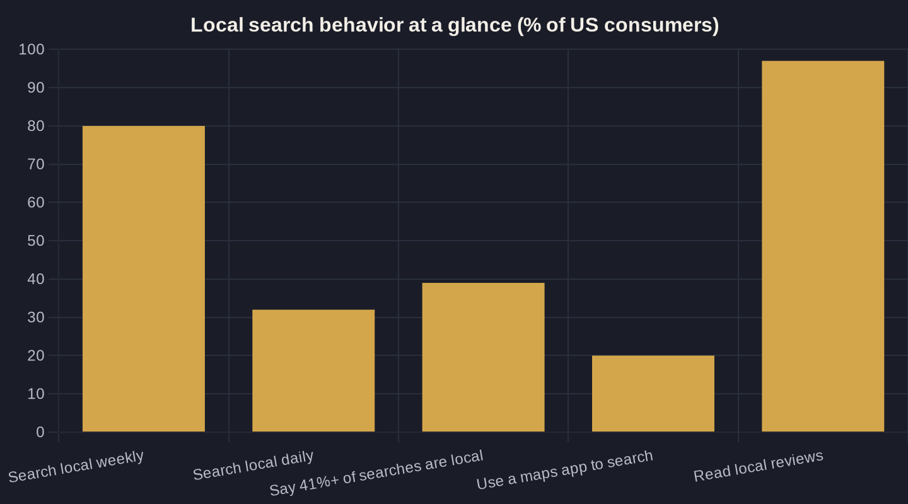

Service-Area and City Pages That Actually Rank
Most city pages are a template with the town name swapped in — and they sit on page five. Here's what separates a page that earns the call from one that drags your whole site down.
Key takeaways
- One page = one service in one place, written for how customers actually search — not a template with the city name swapped in.
- Thin, near-duplicate pages don't rank. Specificity — real neighborhoods, real jobs, real photos — is what earns the position.
- The page and your Google Business Profile must tell one consistent name/address/phone story; they strengthen or discount each other.
- Make the primary call-to-action a trackable phone call — inbound calls convert to revenue 10 to 15x more often than web forms.
- Build city pages in revenue and demand order, and judge each one on calls and booked jobs, not on traffic.
Why local SEO landing pages exist in the first place
Every week, four out of five American consumers search online for a local business, and nearly a third do it every single day, according to BrightLocal's roundup of the 2024 SOCi Consumer Behavior Index. That demand doesn't arrive on your homepage. It arrives on a search for "emergency plumber in Bentonville" or "med spa near me" — and the result that wins is the one built to answer that exact query.
That is the entire job of local SEO landing pages: a dedicated page for one service in one place, written to match the way your future customers actually search. Google has spent years training people to drop the ZIP code and trust the engine to know where they are — Google reports "near me today/tonight" searches grew more than 900% in two years. A city or service-area page is how you show up for that intent instead of hoping your homepage stretches to cover every town you serve.
These pages are one layer of a larger system. If you haven't mapped the whole thing yet, start with the pillar on local SEO for service businesses and treat this as the deep dive on the landing-page layer.
The one-page-per-town trap
Here is where most owners go wrong. They buy a template, swap the city name across 30 pages, and publish "Plumbing in Rogers," "Plumbing in Springdale," and "Plumbing in Cave Springs" — identical except for one word. Google has seen that trick a million times. Thin, near-duplicate pages don't rank; they sit on page five and make the whole site look spammy.
The fix isn't more pages — it's fewer, better ones. A page earns its place when it says something true and specific about serving that town: the neighborhoods you actually cover, the jobs you actually do there, your response times, the local landmarks, the water conditions or permit quirks that matter in that area. If you can't write a paragraph about a city that you couldn't paste onto any other city's page, you're not ready to publish that page.
Local SEO landing pages reward specificity because that's exactly what the searcher rewards. The owner who serves three towns well will out-rank the one who claims thirty and proves none.
What actually belongs on a page that ranks
A page that ranks reads like it was written for one customer in one town, not for a search engine. The non-negotiables: a clear H1 naming the service and the place, your real address or a defined service area, the specific services offered there, honest "starting at" pricing, photos of your actual crew and trucks, and a primary call-to-action above the fold.
It also has to agree with your Google Business Profile. The name, address, and phone number on the page should match the profile exactly, because Google cross-checks them — the details in your Google Business Profile checklist and the page have to tell one consistent story. When they line up, both get stronger; when they conflict, both get discounted.
That same consistency is how you climb the map. The signals that make a city page credible feed your position in the Google Maps 3-pack, where the top three listings take the bulk of the clicks before a searcher ever scrolls.
Reviews and proof are part of the page
Reviews aren't a separate marketing project — they're part of the page itself. BrightLocal's 2026 Local Consumer Review Survey found that 97% of consumers read online reviews for local businesses, and 49% trust those reviews as much as a personal recommendation from a friend or family member. Pulling a few real, recent, location-relevant reviews onto a city page does more for conversion than another paragraph of generic copy.
If your review count is thin in a given town, that's the constraint to fix before you scale the page. The playbook for that lives in how to get more Google reviews the right way — earned, not bought, and never gated behind a rating filter.
| Page element | Thin page (won't rank) | Page that ranks |
|---|---|---|
| Content | City name swapped into a shared template | Specific neighborhoods, real jobs, and local detail |
| Proof | Stock photos, no reviews | Real crew photos plus recent local reviews |
| Name, address, phone | Missing or mismatched | Matches your Google Business Profile exactly |
| Primary call-to-action | Contact form only | Trackable phone number above the fold |
| Pricing | None shown | Honest "starting at" ranges |
| Volume strategy | One page per town, all published at once | Revenue- and demand-prioritized, published as ready |

Make a trackable call the conversion
The point of the page isn't traffic — it's a booked job at a known cost. For service businesses, the highest-value action is almost always a phone call: inbound phone calls convert to revenue 10 to 15 times more often than inbound web leads, per BIA/Kelsey data compiled by Invoca. So the primary call-to-action on a service-area page should be a trackable phone number, not only a contact form buried at the bottom.
"Trackable" is the word that earns its keep. Put a call-tracking number on the page so you can tell which city pages produce calls, which of those calls become jobs, and what each booked job cost you to win. That is the heart of Owner's Math — tracing one dollar of marketing from impression to lead to booked job to revenue — and a city page you can't measure is a city page you can't improve.
How many pages, and in what order
Don't build for every town on the map. Build for the towns where you already do work, where the jobs are worth the most, and where demand is real. A sane sequence: start with the cities driving your current revenue, add the adjacent towns you can genuinely serve, then expand only as fast as you can write each page honestly and back it with local reviews.
The table below is the litmus test I use to decide whether a page is ready to publish — the difference between a thin page that drags your site down and a local SEO landing page that earns the click.
How to know it's working
Give a new page time — local rankings move in weeks, not days — then judge it on the only metrics that matter: impressions, calls, and booked jobs from that page. BrightLocal's 2025 Consumer Search Behavior Study found that 39% of consumers estimate at least 41% of their searches are local, and one in five run those searches directly inside a maps app — so measure both your website pages and the profile they feed.
Your Google Business Profile is part of the same machine. The average profile pulls 1,260 views a month, with roughly 5% converting into a website click, call, or direction request — visibility your city pages both feed and inherit. Track them together or you'll credit the wrong one.
If you'd rather have someone run the Owner's Math on which pages to build first — and what each one should realistically return — that's the kind of work I walk through on a call. Book a time, or get the next breakdown like this one straight to your inbox through the newsletter.
Sources
- BrightLocal — Local SEO Statistics (2024 SOCi Consumer Behavior Index) (2024)
- Think with Google — How Near Me Shopping Searches Have Changed (2018)
- BrightLocal — Local Consumer Review Survey (2026)
- Invoca — Digital Marketing Statistics (BIA/Kelsey data) (2025)
- BrightLocal — Consumer Search Behavior Study (2025)
- BrightLocal — Google My Business Insights Study (2019)
Want this run on your numbers?
Book a call and we will run the Owner's Math on your business — clear numbers, a straight plan, no pitch. Or read the free Playbook first.